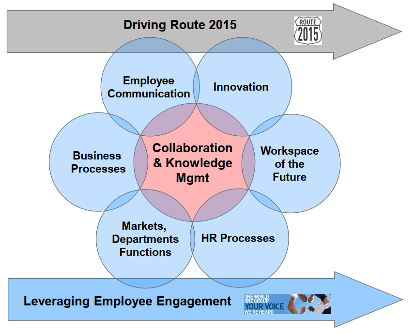

Wissens- und Innovationsmanagement im 21. Jahrhundert - zwei Seiten der gleichen Medaille?
München, 02.11.2023, Simon Dückert (Cogneon)
Wie sehen die beiden Seiten der Medaille aus?

Organisationale Ebene

Quelle: Probst, Raub, Romhardt (1999)
Individuelle Ebene
- Knowledge worker productivity demands that we ask: "What is the task?"
- Knowledge workers have to manage themselfs. They have to have autonomy.
- 👉Continuing innovation has to be part of the work of knowledge workers.👈
- Knowledge work requires continuous learning and teaching.
- Knowledge worker productivity is a matter of quantity AND quality.
- Finally, knowledge worker productivity requires that the knowledge worker is seen as an "asset" rather than a "cost".
Quelle: nach Drucker (1999)
ISO 30401 - Wissensmanagement
"Innovation" kommt nur an zwei Stellen vor
- 4.4.2 a) Acquiring new knowledge: provide the organization with knowledge that was previously unknown or unavailable (e.g. innovation, research, lesson learning).
- Anhang B h) Innovationsmanagement als 1 von 8 "benachbarten Disziplinen":
- Informationsmanagement
- Datenmanagement
- Business Intelligence
- Kundenbeziehungsmanagement (CRM)
- Learning, Organizational Development, Training
- Organizational Learning
- Personalmanagement
- 👉Innovationsmanagement👈
- Risikomanagement
- Qualitätsmanagement
ISO 56000 - Innovationsmanagement
- Standard-Familie zu Innovationsmanagement
- Definition: "management with regard to innovation" 🥱
- Wissensdefinition: outcome of the assimilation of information through learning
- Generischer Innovationsprozess: identify, create, validate, develop, deploy ("iterativ" kommt im Gegensatz zur ISO 30401 nicht vor)
- Verankerung in der Organisation: "Responsibilities and authorities can be assigned to a) existing roles (e.g. all leaders) b) dedicated roles.
adidas Learning Campus
Quelle: Kuhna, Dückert (2011)
Podcast zur ISO 56000
Gerade erschienen: Episode des KCLO Podcast mit
Dennis Boecker, Global IoT Innovation Lead bei Bosch